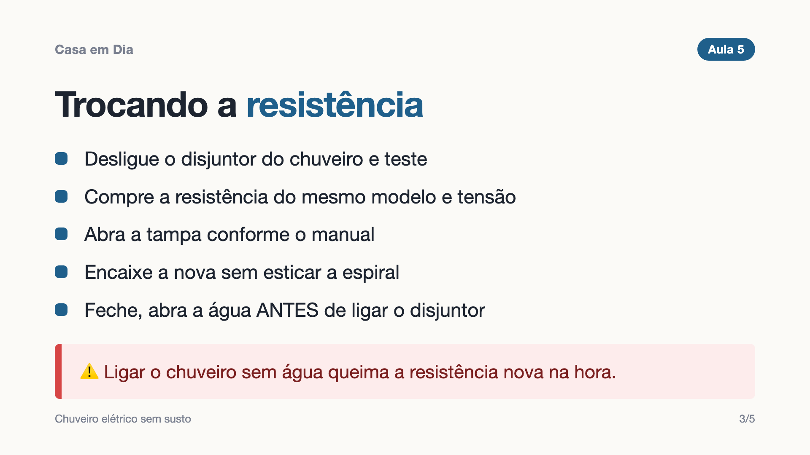

Tomada, chuveiro, disjuntor, torneira pingando, descarga vazando, pia entupida e parede para furar. Aulas curtas, passo a passo, com segurança em primeiro lugar.
Acesso imediato · 7 dias de garantia · Pix, cartão ou boleto

Aulas curtas em vídeo, com tela e narração, para assistir no celular. Cada aula termina com uma tarefa prática.
Você compra pela Kiwify com Pix, cartão ou boleto.
Recebe na hora o acesso por e-mail à área de membros.
Assiste no seu ritmo e faz as tarefas. O acesso fica com você.
Não. O curso começa do zero, pelas ferramentas e pela segurança.
Os reparos ensinados são simples e sempre com a energia desligada e testada. O curso mostra também os sinais em que você deve parar e chamar um eletricista.
O acesso à área de membros é imediato após a compra, e as aulas ficam disponíveis para você assistir quando quiser.
Logo após o pagamento você recebe um e-mail com o acesso à área de membros da Kiwify, com as aulas e os materiais.
Você tem 7 dias de garantia. Se não for para você, pede o reembolso direto na Kiwify.